Repair Procedures
Removal
CAUTION:
- Frequent inhalation of brake pad dust, regardless of material composition, could be hazardous to your health.
- Avoid breathing dust particles.
- Never use an air hose or brush to clean brake assemblies.
1. Release the parking brake.
2. Remove the rear wheel & tire.
Tightening torque:
88.3 - 107.9 N.m (9.0 - 11.0 kgf.m, 65.1 - 79.6 lb-ft)
3. Remove the rear brake drum (A).
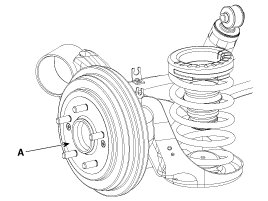
4. Remove the upper return spring (A).
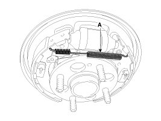
5. Remove the lower return spring (A).
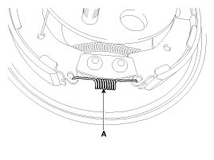
6. Remove the shoe hold springs (A) and shoe hold pins (B) and then remove brake shoe (C). Make sure not to damage the dust cover on the wheel cylinder.
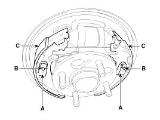
7. Remove the parking brake cable (A) and then remove brake shoe (B).
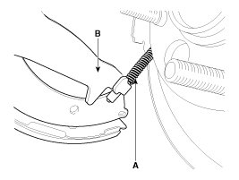
8. Disconnect brake tubes (A) from the wheel cylinder (B).
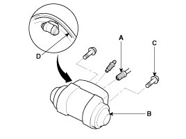
9. Remove the bolts (C) and the wheel cylinder (B) from the backing plate (D).
Installation
NOTE:
- Do not spill brake fluid on the vehicle: it may damage the paint; if brake fluid does contact the paint. Wash it off immediately with water.
- To prevent spills, cover the hose joints with rags or shop towels.
- Use only a genuine wheel cylinder special bolt.
1. Apply sealant (C) between the wheel cylinder (B) and backing plate (D), and install the wheel cylinder.
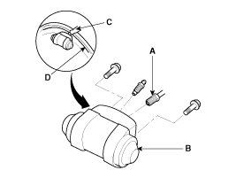
2. Connect the brake tubes (A) to the wheel cylinder.
Tightening torque:
12.7 - 16.7 N.m (1.3 - 1.7 kgf.m, 9.4 - 12.3 lb-ft)
3. Connect the parking brake cable (A) to the brake shoe.
4. Install the brake shoes (C) onto the backing plate. Be careful not to damage the wheel cylinder dust covers.
5. Install the shoe hole down pins (B) and the shoe hole down springs (A).
6. Clean the threaded portions of adjuster sleeve (A) and push rod female (B). Coat the threads of the adjuster assembly with grease. To shorten the clevices, turn the adjuster bolt (C).
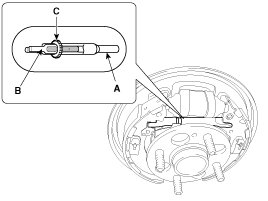
7. Hook the shoe adjuster lever (C), then install it to the brake shoe.
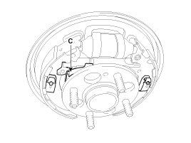
8. Install the adjuster assembly (B) and upper return spring (A) as right direction. Be careful not to damage the wheel cylinder dust covers.
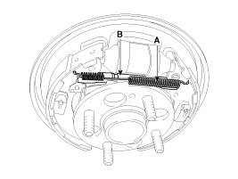
9. Install the lower return spring (B).
10. Apply brake cylinder grease or equivalent rubber grease to the sliding surfaces shown. Don't get grease on the brake linings.
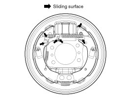
11. Apply brake cylinder grease or equivalent rubber grease to the brake shoe ends and opposite edges of the shoes shown. Don't get grease on the brake linings.
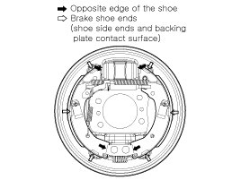
12. Install the rear brake drum (A).
Tightening torque:
4.9 - 5.9 N.m (0.5 - 0.6 kgf.m, 3.6 - 4.3 lb-ft)
13. If the wheel cylinder has been removed, bleed the brake system.
14. Depress the brake pedal several times to set the self-adjusting brake.
15. Adjust the parking brake.
Inspection
CAUTION:
- Frequent inhalation of brake pad dust, regardless of material composition, could be hazardous to your health.
- Avoid breathing dust particles.
- Never use an air hose or brush to clean brake assemblies.
NOTE:
- Contaminated brake linings or drums reduce stopping ability.
- Block the front wheels before jacking up the rear of the vehicle.
1. Raise the rear of the vehicle, and make sure it is securely supported.
2. Release the parking brake, and remove the rear brake drum.
3. Check the wheel cylinder (A) for leakage.
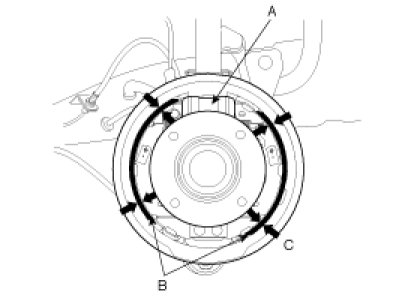
4. Check the brake linings (B) for cracking, glazing, wear, and contamination.
5. Measure the brake lining thickness (C).Measurement does not include brake shoe thickness.
Brake lining thickness
Standard: 4.5 mm (0.177 in)
Service limit: 1.0 mm (0.039 in)
6. If the brake lining thickness is less than the service limit, replace the brake shoes as a set.
7. Check the bearings in the hub unit for smooth operation. If it requires servicing, replace it.
8. Measure the inside diameter of the brake drum with inside vernier calipers.
Drum inside diameter
Standard: 203.2 mm (8.0 in)
Service limit: 205.2 mm (8.079 in)
Drum roundness
Service limit: 0.06 mm (0.00236 in)
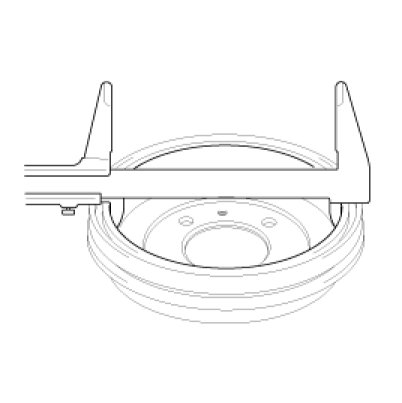
9. If the inside diameter of the brake drum is more than the service limit, replace the brake drum.
10. Check the brake drum for scoring, grooves, and cracks.
11. Inspect the brake lining and drum for proper contact.
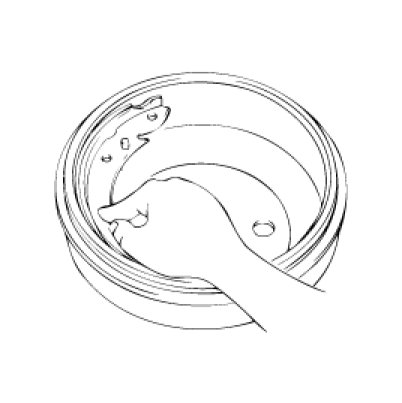
12. Inspect the wheel cylinder outside for excessive wear and damage.
13. Inspect the backing plate for wear or damage.